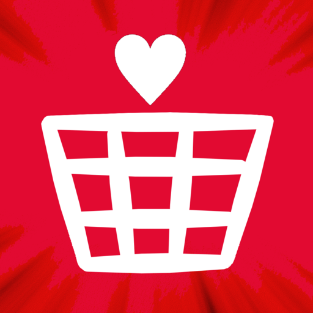
Archived
Better Sticky Button
A Shopify app built with Ruby on Rails that keeps a purchase button within reach as shoppers move through a product page.
I'm a software engineer and founder currently living in Japan. My main focus is building Novacut.ai, an AI video editor that turns long recordings into editor-ready rough cuts.
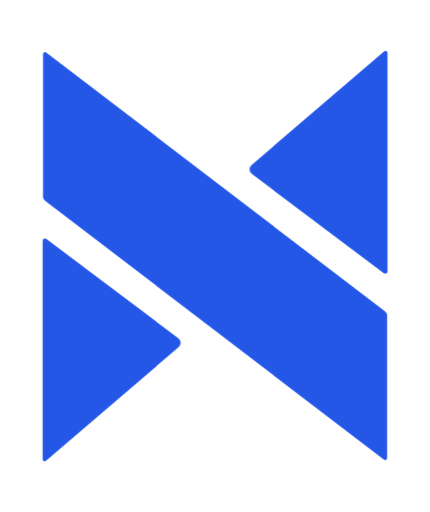
Novacut.ai Founder
Apr 2025 - Present · 1 yr 4 mos
My main focus: building an AI video editor that turns long recordings into editor-ready rough cuts.
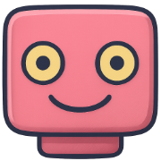
South Bay Generative AI Meetup Co-Organizer · Full-time
Mar 2023 - Present · 3 yrs 5 mos
San Francisco Bay Area · On-site
Co-organizer of the South Bay Generative AI Meetup, one of the largest GenAI meetups in the world.
Amazon Senior Software Development Engineer · Permanent
Sep 2020 - Feb 2025 · 4 yrs 6 mos
Sunnyvale, California, United States
Developed the Fire Tablet and Alexa integrations using Android, Java, and Kotlin.
SBI Senior Frontend Developer
Jul 2019 - Sep 2020
Frontend developer working with a team of local and remote developers, building cryptocurrency software for financial services companies, using React, Javascript, and Java.
Solairo Senior Software Developer
Apr 2017 - Jul 2019
B2B Chat application. Used in major websites for customer support.
Answrly LLC Founder
Jan 2016 — Feb 2017
A website that you can go to to get your questions answered by professionals. It's there to answer the questions you can't find on a search engine.
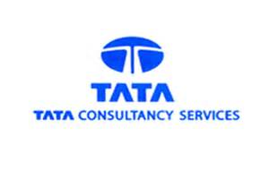
Tata Consultancy Services Software Engineer
Jul 2015 — Apr 2017
Snapp Digital Software Developer
Jul 2015 — Dec 2015
Miami University Resident Assistant
Jul 2012 — Dec 2015
Progressive Insurance Application Developer Intern
Jul 2014 — Jul 2014
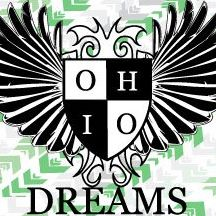
Ohio Dreams Action Sports Camp Camp Counselor | Lifeguard | Ski Coach
May 2011 — Aug 2012
Independence Pool Lifeguard
May 2009 — Aug 2012
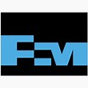
Freeport McMoran Copper & Gold Process Control Intern
Jul 2012 — Jul 2012
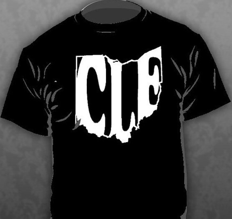
Ohio Represent T-Shirts Co-Owner and Founder
Jul 2010 — Jul 2011
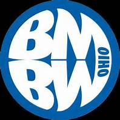
Boston Mills & Brandywine Ski Instructor
December 2009 – February 2010
A mix of shipped products, experiments, and earlier work. Archived projects are included to show the range of things I have built, even when the original service is no longer online.

A Shopify app built with Ruby on Rails that keeps a purchase button within reach as shoppers move through a product page.
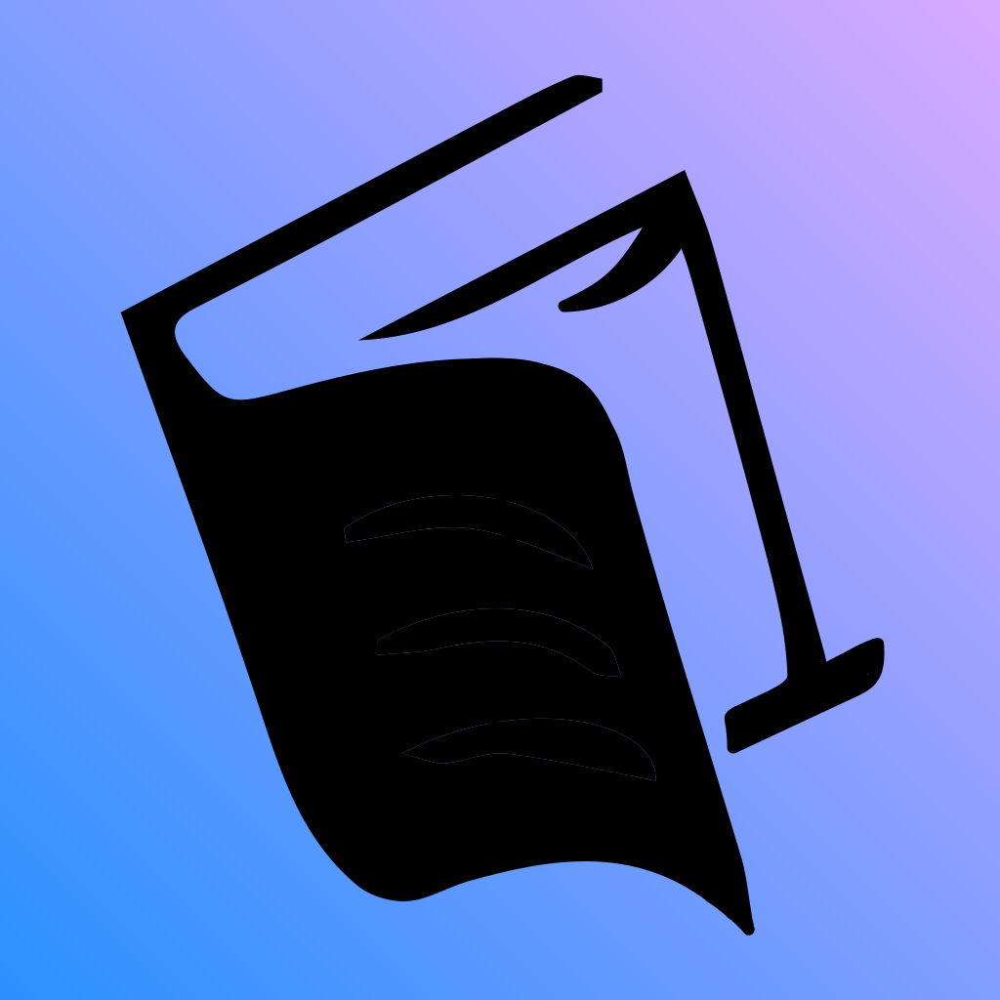
A book-discovery experiment that showed readers the first page before revealing the title and author.
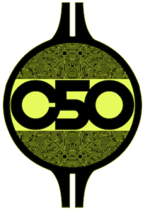
A cryptocurrency index concept designed to represent a diversified basket of 50 crypto assets in one token.
A mobile alarm clock that paired a new electronic track with each morning alarm, supported by a Rails API.
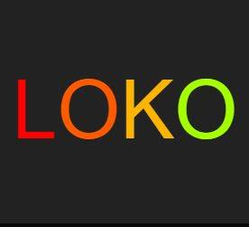
A business-idea generator with more than 10,000 combinations, built with Ruby on Rails.
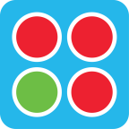
A cross-platform arcade game for Android and iOS, built in Java with LibGDX.
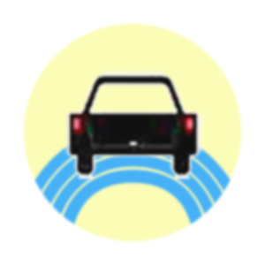
A native Android road-trip game that turned family travel into a shared visual scavenger hunt.
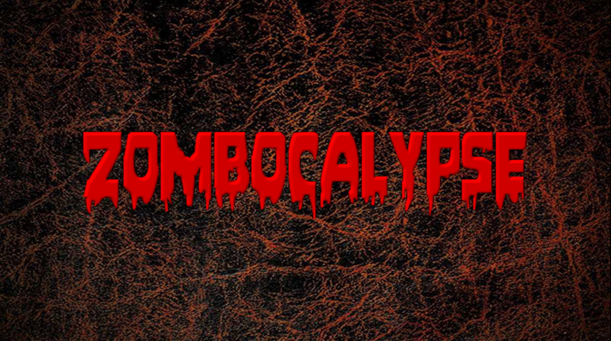
A Unity game built in C# for a game-design capstone, centered on defending a house from waves of zombies.
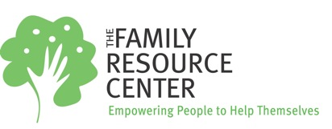
A C# desktop application and SQL Server interface created to help a local nonprofit manage client records.